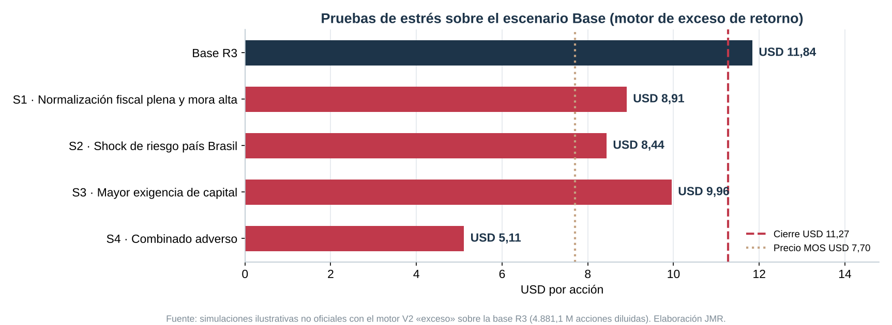
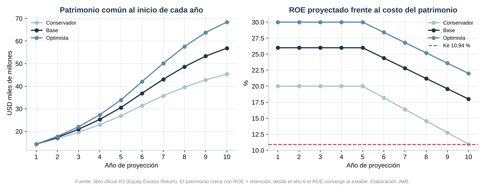
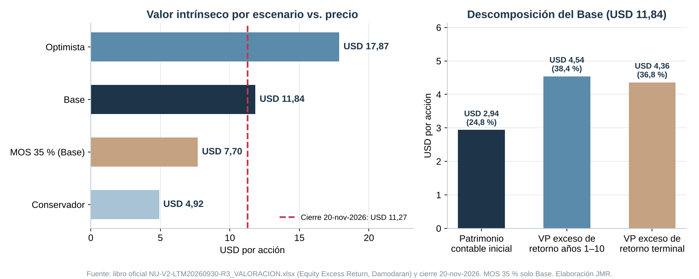
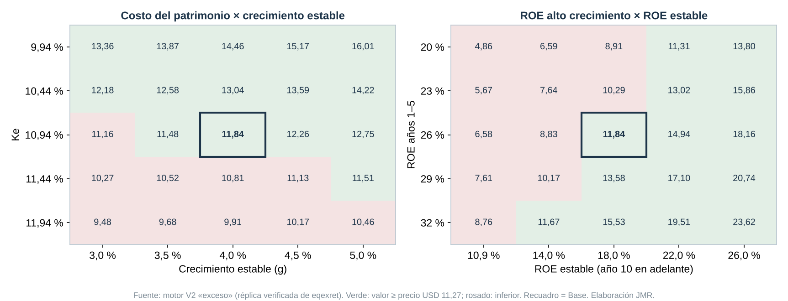

La mayor fintech digital de Latinoamérica supera USD 1.090 M de utilidad trimestral y 142,6 M de clientes, pero la mora 90+ sube a 7,3 % y la acción cae 41 % desde máximos. ¿Cuánto vale su ventaja estructural?
INFORME FUNDAMENTAL · EN REVISIÓNNOVIEMBRE 2026
Perfil de la empresa
Nu Holdings
Tesis
Nu Holdings construyó la mayor fintech de Latinoamérica (142,6 M clientes, eficiencia 19,3 %, utilidad neta LTM US$3.919 M y ROE 32 % en el 3T26). Valorada como banco (exceso de retorno, Ke 10,94 %), el Base es US$11,84 (5,1 % sobre US$11,27) y el precio con MOS 35 % es US$7,70: el mercado ya descuenta un ROE sostenido de ~25 %.
La empresa
Nu Holdings Ltd. (NYSE: NU; Nubank) opera una plataforma financiera 100 % digital en Brasil (119,9 M clientes, 65 % adultos), México (16,6 M; banco múltiple ago-2026) y Colombia (6,1 M), más lanzamientos en EE. UU. y Nu Global (sep–oct 2026).
En LTM al 30-sep-2026 registró ingresos IFRS de US$20.987 M, EBIT de US$4.633 M (22,1 %), utilidad neta de US$3.919 M y caja libre Holdco de US$2.100 M. Solvencia Basilea III: CET1 Brasil 12,1 % (mín. 7,0 %).
Precio (20-nov-2026)
US$11,27
Rango 52 semanas
11,20 – 18,98
CET1 Brasil (3T26)
12,1 % (mín. 7,0 %)
Capitalización
US$55,0 mil M
Cotización semanal desde OPI (dic-2021 a nov-2026 · US$)
Cierre semanal desde OPI (9-dic-2021 a 20-nov-2026). Rango 52 semanas: US$11,20–18,98; var. desde OPI: +9,1 %. Fuente: Yahoo Finance y Forms 6-K.
Aviso legal
Este informe es un estudio educativo y de análisis fundamental elaborado bajo el Modelo JMR V2.0 (contrato v1.5.6) para revisión personal de su propietario. No constituye asesoramiento financiero, oferta ni recomendación individualizada de compra o venta de valores. La inversión en empresas fintech y de crédito de mercados emergentes conlleva riesgos de crédito, liquidez, tipo de cambio y pérdida sustancial o total de capital.
Las cifras históricas proceden de documentos oficiales presentados ante la SEC por Nu Holdings Ltd. (CIK 0001691493: Forms 20-F FY2021–FY2025 y Forms 6-K hasta el 3T26, publicados el 12-nov-2026). Las proyecciones, escenarios y pruebas de estrés ilustrativas reflejan supuestos explícitos del analista y no garantías de resultados futuros.
Estado de este estudio
Revisión NU-V2-LTM20260930-R3, corte contable LTM al 30-sep-2026 y precio de cierre al 20-nov-2026 (US$11,27). Estado técnico: EN REVISIÓN (sin auditoría independiente ni aprobación personal). Sustituye a R2 (FCFF Simple Ginsu) tras la revisión del método del 22-nov-2026: Nu capta depósitos y asume riesgo de crédito, por lo que se valora como banco; R2 se conserva como contraste.
Cómo se elaboró
Conforme al contrato JMR V2.0 v1.5.6 y al proceso sectorial de bancos, el cálculo se ejecuta en el libro oficial NU-V2-LTM20260930-R3_VALORACION.xlsx, construido sobre el modelo original Equity Excess Return de Damodaran (eqexret) con estados, escenarios y fuentes enlazados por fórmulas: patrimonio común US$14.342,6 M, utilidad neta LTM US$3.918,9 M, Ke 10,94 % (5,15 % + 0,76 × 7,62 %), CET1 12,1 % (mín. 7,0 %), tres escenarios (Conservador US$4,92 · Base US$11,84 · Optimista US$17,87), MOS 35 % solo sobre el Base (US$7,70) y paridad libro ↔ motor de 0,000 %. La maquetación reproduce NVIDIA R6 y MercadoLibre R8.
En el tercer trimestre de 2026 Nu Holdings superó los USD 1.091 M de utilidad neta trimestral (+31 % interanual neutral a divisas), con ingresos gerenciales de USD 6.259 M (+37 % FXN), 142,6 M de clientes y un ROE anualizado de 32 %.
Pese a resultados récord, la acción retrocedió 40,6 % desde su máximo de 52 semanas (USD 18,98) hasta USD 11,27 el 20-nov-2026 (casi su mínimo anual de USD 11,20), comprimiéndose a 14,1× utilidad neta LTM y 3,8× patrimonio contable.
El mercado penaliza el repunte de la morosidad 90+ días a 7,3 % (máximo de trece trimestres), un cargo por pérdidas crediticias esperadas (ECL) de USD 1.668 M en 3T26 (+70,7 % interanual), la compresión del margen operativo LTM a 22,1 % (vs. 24,5 % en FY25) y la incertidumbre de la expansión a Estados Unidos.
La pregunta central de este informe es si a US$11,27 el mercado paga correctamente la rentabilidad de la mayor fintech de crédito de Latinoamérica: valorada como banco, el Base es US$11,84 (5,1 %), y el precio supera el margen de seguridad de 35 % (US$7,70), porque descuenta un ROE sostenido de ~25 %.
Beneficios récord frente a un mercado escéptico
Pocas fintechs en el mundo han escalado con la velocidad y rentabilidad de Nu Holdings. En menos de cinco años desde su OPI en Nueva York (diciembre de 2021), la plataforma pasó de 53,9 millones de clientes y pérdidas operativas de USD 170 M a 142,6 millones de clientes, ingresos IFRS LTM de USD 20.987 M y un EBIT reportado de USD 4.633 M al 30 de septiembre de 2026 (Forms 20-F FY2021–FY2025 y Form 6-K 3T26). Solo en los dos últimos trimestres (2T26 y 3T26), Nubank generó USD 2.153 M de utilidad neta, superando por primera vez el umbral de los mil millones de dólares trimestrales de forma consecutiva.
Sin embargo, la cotización cuenta una historia mucho más exigente. Tras marcar USD 18,98 en 2026, el título cayó hasta USD 11,27 el 20 de noviembre de 2026 (−40,6 % desde máximos). La corrección se aceleró tras publicar el 3T26 el 12 de noviembre de 2026, debido a tres señales que exigen rigor financiero: (i) la mora mayor a 90 días (NPL 90+) subió a 7,3 % (desde 6,9 % en 2T26 y 6,7 % en 3T25); (ii) el cargo por pérdidas crediticias esperadas saltó +70,7 % interanual hasta USD 1.668 M en el trimestre (USD 4.869 M en 9M26), comprimiendo el margen operativo LTM en 245 pb respecto a FY2025; y (iii) el ratio CET1 del conglomerado prudencial brasileño cedió 90 pb en nueve meses, de 13,0 % a 12,1 %, mientras los activos ponderados por riesgo crecían +28,3 % YTD.
Durante 2026 se acumularon además hitos estratégicos determinantes: el programa inaugural de recompra por USD 1.000 M en junio (con USD 500,4 M ejecutados en 9M26), el acuerdo para adquirir Banco Porto Real en julio, la entrada en operación como banco múltiple en México el 6 de agosto, el lanzamiento comercial de Nu US (en alianza con Lead Bank tras la aprobación condicional de la OCC para Nubank, N.A.) y Nu Global en septiembre–octubre, y la salida del CTO Eric Young el 23 de octubre antes del primer Investor Day del 8 de diciembre de 2026.
Fecha (2026)
Hito verificado (fuente primaria SEC)
Implicación económica / estratégica
Ene 2026
Aprobación condicional OCC para Nubank, N.A. (Forms 6-K)
Habilita la ruta hacia carta bancaria nacional en EE. UU., con mayores exigencias de capital y cumplimiento.
8 abr
Form 20-F FY2025 (acc. 0001292814-26-002166)
Confirma ingresos IFRS de USD 15.775 M (+37,0 %), EBIT de USD 3.872 M (24,5 %) y utilidad común de USD 2.869 M.
4 jun
Programa de recompra hasta USD 1.000 M (6-K 0001292814-26-003326)
Primera devolución material de capital: 40,66 M de acciones Clase A recompradas por USD 500,4 M en 9M26.
20 jul
Acuerdo por Banco Porto Real (6-K 0001292814-26-003814)
Añade licencia bancaria formal en Brasil (Resolución Conjunta del BCB; sujeto a aprobación regulatoria).
6 ago
Inicio de operaciones como banco múltiple en México (6-K 3T26)
Multiplica 16× el seguro de depósito (hasta ~USD 195 mil) y habilita cuentas de nómina; CAR MX 16,4 %.
10 sep
Lanzamiento de Nu US (Lead Bank) y Nu Global (6-K 0001292814-26-004518)
Cuenta 3,5 % APY y tarjeta 1,5 % cashback en 50 estados; impacto comprometido ≤ 100 pb en eficiencia 2026–27.
23 oct
Renuncia del CTO Eric Young (6-K 0001292814-26-005000)
Transición hasta 12-nov; David Vélez y el CISO John Walton asumen liderazgo interino de tecnología.
Utilidad récord USD 1.092 M y ROE 32 %, pero NPL 90+ sube a 7,3 % y la acción cae a USD 11,27.
Fuente: SEC EDGAR (CIK 0001691493), Forms 20-F y 6-K publicados entre enero y noviembre de 2026.
Nuestra lectura. Nu Holdings llega a noviembre de 2026 con el mayor contraste de su historia bursátil: fundamentos operativos en máximos (USD 21,0 B de ingresos LTM, 142,6 M clientes) frente a un castigo de mercado del 41 % por el ciclo de crédito en Brasil. El modelo DCF fintech nos permite separar si el precio descuenta un bache cíclico manejable o una erosión estructural de márgenes.
SECCIÓN 02
Modelo de negocio
Lo esencial
Nu opera un modelo fintech 100 % digital sin sucursales con tres palancas complementarias: captación de depósitos de bajo costo (USD 47,5 B al 87 % de la tasa interbancaria), originación algorítmica de crédito minorista (cartera bruta USD 41,6 B) y pagos/comisiones de alta frecuencia (USD 3,0 B LTM).
La brecha de economía unitaria explica su rentabilidad: ARPAC mensual de USD 17,7 (+25 % FXN interanual) frente a un costo de servir de USD 1,1/mes y un ratio de eficiencia de 19,3 %.
Brasil concentra el 90,3 % de los ingresos consolidados de 9M26 (USD 14.713 M, Nota 34), mientras México (7,4 %, USD 1.212 M) y Colombia (2,3 %, USD 377 M) son los motores de expansión regional con 22,7 M de clientes combinados.
En el enfoque DCF fintech (Damodaran–MELI), los depósitos y las letras financieras de Nu Financeira son fondeo operativo cuyo costo ya descuenta del EBIT reportado; la caja libre de la matriz (Nu Holdings Cash & Securities) asciende a USD 2.100 M (Slide 22, Form 6-K 3T26).
Motor económico: plataforma fintech de costo mínimo y monetización por cohortes
A diferencia de la banca tradicional cargada de redes físicas y sistemas heredados, Nu diseñó una arquitectura nativa en la nube (AWS) centrada en una sola aplicación móvil. Al 30-sep-2026 servía a 142,6 millones de clientes (119,2 M activos; 83,6 % de actividad consolidada y 86,3 % en Brasil) con un costo mensual de servir de apenas USD 1,1. En las cohortes brasileñas maduras (más de 84–96 meses), el ingreso mensual por cliente activo supera los USD 22–30 (Apéndice Slide 25, Form 6-K 3T26), demostrando un apalancamiento operativo sobresaliente a medida que los usuarios adoptan pagos Pix, tarjeta de crédito, préstamos personales, crédito nómina (consignado), inversiones y seguros.
La secuencia de monetización sigue un guion disciplinado en cada país: (1) captar masa crítica con cuenta remunerada sin comisiones y tarjeta gratuita de alta satisfacción (NPS líder regional); (2) convertir la cuenta en cuenta principal de depósitos y pagos cotidianos, acumulando datos transaccionales propietarios; (3) desplegar líneas de crédito graduales —primero tarjetas de límite bajo y luego préstamos personales con o sin garantía (FGTS/INSS/nómina)—; y (4) añadir ingresos por comisiones, inversiones y seguros con menor consumo de capital.
Evolución de la base de clientes (FY20–3T26) y divergencia estructural entre ARPAC mensual (USD 17,7) y costo de servir (USD 1,1). Fuente: Forms 20-F y 6-K.
Composición de ingresos, cartera y geografías (3T26 y 9M26)
El 86,1 % de los ingresos IFRS de 9M26 provino de ingresos por intereses y ganancias financieras (USD 14.039 M), mientras el 13,9 % correspondió a comisiones y tarifas de intercambio y servicios (USD 2.262 M). La Nota 34 del Form 6-K 3T26 confirma que Brasil sigue generando nueve de cada diez dólares de ingresos, aunque México (+68 % interanual en cartera) y Colombia (+80 % FXN) ganan peso rápidamente:
País / segmento (9M26 · Nota 34 y 6-K)
Clientes (M)
% adultos
Ingresos 9M26 (USD M)
% ingresos
Cartera / estado regulatorio
Brasil
119,9
65 %
14.712,7
90,3 %
Conglomerado Tipo 3 (CET1 12,1 %); acuerdo Banco Porto Real
México
16,6
17 %
1.211,7
7,4 %
Banco múltiple operativo desde 6-ago-2026 (CAR 16,4 %)
Colombia y otros (incl. Nu US/Global)
6,1
14 %
377,1
2,3 %
Nu Financiera (CAR 17,3 %); Nu US / Nu Global lanzados sep–oct 26
Total consolidado (9M26 IFRS)
142,6
—
16.301,5
100,0 %
Cartera bruta USD 41.588 M · Depósitos USD 47.487 M
Fuente: Form 6-K 3T26 Nota 34 (desglose geográfico IFRS) y Presentación 3T26 (acc. 0001292814-26-005275).
Estructura de fondeo, liquidez y puente fintech
Al 30 de septiembre de 2026, los depósitos de clientes alcanzaron USD 47.487 M (RDB Brasil USD 37.564 M, depósitos a la vista USD 9.054 M, CDB USD 823 M), respaldados por una posición líquida consolidada de USD 13.772 M en efectivo y equivalentes más USD 21.152 M en valores soberanos y títulos financieros y USD 10.220 M en encajes del banco central. El ratio gerencial cartera neta / fondeo disponible (LDR neto) fue de apenas 57 % (USD 24,7 B de crédito neto vs. USD 43,7 B de fondeo disponible). Adicionalmente, la matriz Nu Holdings Ltd. mantiene USD 2.100 M de caja y valores libres fuera de las subsidiarias reguladas (Slide 22, Form 6-K 3T26), sin bonos corporativos en el holding y con únicamente USD 68,5 M de pasivos por arrendamiento IFRS 16.
Nuestra lectura. El negocio central de Nu combina la economía de una plataforma de software (eficiencia 19,3 %, costo USD 1,1/mes) con el balance de un originador de crédito masivo. Por ello la valoramos como banco: el crédito y la captación son el negocio, la reinversión es el capital común que exige el CET1 y el valor depende de la diferencia entre el ROE y el costo del patrimonio, no de un flujo de caja «de la empresa» que trate los depósitos como deuda.
SECCIÓN 03
Calidad del negocio
Lo esencial
Los ingresos IFRS crecieron 28,5× en seis años: de USD 737 M en FY2020 a USD 20.987 M en LTM sep-2026 (+47,0 % interanual en 9M26), mientras el EBIT reportado pasó de −USD 92 M a USD 4.633 M (margen operativo 22,1 %).
El margen operativo se comprimió −245 pb frente al máximo de FY2025 (24,5 %) porque el cargo por pérdidas crediticias (ECL) alcanzó USD 6.110 M en LTM (29,1 % de ingresos) y la mora 90+ subió a 7,3 %.
La tasa efectiva de impuestos LTM cayó a 15,2 % (vs. 25,8 % en FY25 y 29,4 % en FY24) por beneficios fiscales de I+D (Lei do Bem) y reconocimiento de activos fiscales diferidos (USD 3.346 M); nuestro DCF la normaliza hasta la tasa marginal estatutaria de 34,0 % en el año 10.
La solvencia regulatoria permanece sólida: CET1 Brasil 12,1 % (vs. mínimo 7,0 %, +510 pb), CAR Brasil 15,7 %, México 16,4 % y Colombia 17,3 %, más USD 2,1 B de caja libre en el holding.
Evolución financiera histórica (FY2020–FY2025 y LTM 30-sep-2026)
Nu Holdings cotiza en la NYSE desde el 9 de diciembre de 2021; se recopilaron siete períodos IFRS consecutivos completos desde los Forms 20-F FY2021, FY2023 y FY2025 más el Form 6-K 3T26 (separando estrictamente los ejercicios fiscales anuales FY del período acumulado LTM al 30-sep-2026). La ausencia de estados auditados públicos anteriores a FY2020 (etapa pre-OPI) se documenta transparentemente bajo el aviso D02 del contrato V2.
Trayectoria anual y LTM de ingresos IFRS, EBIT reportado y márgenes bruto y operativo (FY2020–LTM sep-2026). Fuente: SEC EDGAR.Progresión trimestral de ingresos gerenciales, utilidad neta IFRS y ROE anualizado (4T24–3T26). Fuente: Comunicados Forms 6-K.
Siguiendo el contrato V2 v1.5.6 y el patrón MELI R9, se presentan las partidas contables en importes absolutos (USD millones) y los márgenes/ratios en su unidad natural (%, × y USD/acción), diferenciando el corte anual FY del período LTM:
Estado de resultados consolidado (IFRS · importes absolutos en USD M y ratios)
Concepto
Unidad
FY 2020
FY 2021
FY 2022
FY 2023
FY 2024
FY 2025
LTM sep-26
Ingresos totales (IFRS)
USD M
737,1
1.698,0
4.792,2
8.029,0
11.517,1
15.774,7
20.987,4
Costo de servicios financieros y transacc. (incl. ECL)
USD M
410,2
965,1
3.129,2
4.538,1
6.264,2
9.149,7
12.396,1
del cual: pérdida crediticia esperada (ECL)
USD M
169,5
480,6
1.404,9
2.285,2
3.169,0
4.204,9
6.110,4
Utilidad bruta
USD M
326,9
732,9
1.663,0
3.490,9
5.252,9
6.625,0
8.591,3
Gastos operativos netos (incl. D&A y SBC)
USD M
418,9
903,1
1.971,9
1.951,8
2.457,7
2.752,9
3.958,3
EBIT reportado (Utilidad operativa)
USD M
−92,0
−170,2
−308,9
1.539,1
2.795,2
3.872,1
4.633,0
Partidas financieras / participadas (no op.)
USD M
−101,2
0,0
0,0
0,0
0,0
−3,7
−14,4
Utilidad antes de impuestos (UAI)
USD M
−193,2
−170,2
−308,9
1.539,1
2.795,2
3.868,4
4.618,6
Impuestos sobre la renta
USD M
−21,7
−4,8
55,7
508,5
823,1
996,7
699,7
Utilidad neta consolidada (IFRS)
USD M
−171,5
−165,3
−364,6
1.030,5
1.972,1
2.871,7
3.918,9
Margen bruto
%
44,4 %
43,2 %
34,7 %
43,5 %
45,6 %
42,0 %
40,9 %
Margen operativo (EBIT / Ingresos)
%
−12,5 %
−10,0 %
−6,4 %
19,2 %
24,3 %
24,5 %
22,1 %
Margen neto
%
−23,3 %
−9,7 %
−7,6 %
12,8 %
17,1 %
18,2 %
18,7 %
Tasa efectiva de impuestos
%
N/D
N/D
N/D
33,0 %
29,4 %
25,8 %
15,2 %
UPA diluida (EPS)
USD/acc.
−0,13
−0,10
−0,08
0,21
0,40
0,58
0,80
Fuente: Forms 20-F FY2021, FY2023 y FY2025; Form 6-K 3T26 (LTM = FY25 + 9M26 − 9M25). En FY20–22 la tasa efectiva es N/D por pérdidas antes de impuestos.
Balance general consolidado y métricas fintech (IFRS · USD millones)
Concepto
Unidad
FY 2020
FY 2021
FY 2022
FY 2023
FY 2024
FY 2025
30-sep-26
Efectivo y equivalentes (consolidado)
USD M
2.343,8
2.705,7
4.172,3
5.923,4
9.185,7
15.003,6
13.772,3
Caja y valores libres en Holdco (puente EV)
USD M
N/D
N/D
N/D
N/D
N/D
N/D
2.100,0
Cartera bruta de crédito (tarjetas + préstamos)
USD M
3.319,8
6.554,5
11.242,7
18.202,1
20.735,8
32.666,7
41.588,4
Provisión acumulada ECL (balance)
USD M
243,8
588,2
1.350,9
2.608,4
3.184,1
5.022,0
7.086,8
Activos totales
USD M
10.154,4
19.858,8
29.934,9
43.498,4
49.931,2
74.893,9
87.428,6
Depósitos de clientes (fondeo operativo)
USD M
5.584,9
9.667,3
15.808,5
23.691,1
28.855,1
41.925,1
47.486,8
Préstamos y financiamiento Nu Financeira (op.)
USD M
177,2
157,2
585,6
1.136,3
1.730,4
4.398,2
4.980,1
Pasivos por arrendamiento IFRS 16 (puente EV)
USD M
12,0
7,6
20,4
36,9
26,2
29,2
68,5
Pasivos totales
USD M
9.716,3
15.416,2
25.044,1
37.092,1
42.284,1
63.572,3
73.083,6
Patrimonio total (incl. NCI)
USD M
438,1
4.442,6
4.890,8
6.406,4
7.647,1
11.321,6
14.344,9
Inversiones en asociadas (activos no op.)
USD M
0,0
0,0
0,0
0,0
99,4
98,7
89,6
Acciones diluidas promedio (Nota 9)
M acc.
1.319,2
1.602,1
4.677,0
4.857,6
4.888,9
4.907,4
4.881,1
ROE (Utilidad neta / Patrimonio final)
%
−39,1 %
−3,7 %
−7,5 %
16,1 %
25,8 %
25,4 %
27,3 %
ROIC operativo (NOPAT / Capital invertido*)
%
N/D
N/D
N/D
N/D
N/D
N/D
31,9 %
*Capital invertido fintech LTM = Patrimonio (USD 14.345 M) + Arrendamientos (USD 68,5 M) − Caja libre Holdco (USD 2.100 M) = USD 12.313 M; Ventas/Capital observado = 1,70×. Fuente: Libro oficial R2 y SEC EDGAR.
Flujos de efectivo, CapEx, SBC y recompras (IFRS · USD millones)
Concepto
Unidad
FY 2020
FY 2021
FY 2022
FY 2023
FY 2024
FY 2025
LTM sep-26
Flujo de efectivo operativo (CFO IFRS)*
USD M
974,5
−2.924,3
755,6
1.266,2
2.399,0
3.500,5
−218,5
CAPEX (PPE + intangibles desarrollados IAS 38)
USD M
8,0
28,5
114,3
177,0
175,0
340,8
407,3
Flujo de inversión (CFI)
USD M
−16,3
−154,2
−127,2
−177,0
−330,6
−342,3
−413,8
Flujo de financiación (CFF)
USD M
240,1
3.336,0
654,0
425,2
727,7
2.290,2
1.119,3
Compensación basada en acciones (SBC)
USD M
35,6
157,3
253,2
212,6
272,4
271,8
394,1
Recompras de acciones (dividendos = 0)
USD M
0,0
4,6
0,0
0,0
0,0
0,0
500,4
*El CFO IFRS de entidades de crédito refleja la expansión neta de cartera (+USD 21,6 B en 9M26) y compras de títulos (−USD 4,9 B) frente a captación de depósitos (+USD 5,6 B); por ello la valoración no proyecta el CFO contable: mide la reinversión como capital común retenido para sostener el CET1 (retención de 80 % en el Base).
Expansión conjunta de la cartera bruta de crédito (USD 41,6 B) y los depósitos de clientes (USD 47,5 B), FY2020–3T26. Fuente: SEC EDGAR.Evolución trimestral de morosidad 15–90 días (4,9 %), mora 90+ días (7,3 %) y cobertura acumulada de provisiones (234 %). Fuente: Forms 6-K.Ratios de solvencia Basilea III por jurisdicción (Nota 33) y posición de capital consolidada USD 9,9 B (incl. USD 2,1 B libres en Holdco). Fuente: Form 6-K 3T26.
Nuestra lectura. La calidad operativa de Nu es genuinamente excepcional (margen operativo 22,1 % después de absorber USD 6,1 B de provisiones crediticias), pero dos distorsiones exigen cautela analítica: (1) la tasa fiscal anormalmente baja de 15,2 % infla la utilidad neta actual y debe normalizarse hacia el 34 % estatutario; y (2) el CapEx contable de USD 407 M subestima enormemente las necesidades reales de capital para crecer la cartera de crédito, razón por la cual nuestra valoración bancaria exige retener 80 % de la utilidad en el escenario Base para que el patrimonio crezca al ritmo de los activos ponderados por riesgo.
SECCIÓN 04
Equipo directivo y gestión del capital
Lo esencial
Nu sigue liderada por su fundador, presidente y CEO David Vélez y su cofundadora Cristina Junqueira, con fuerte alineación patrimonial: Vélez posee 974,4 M de acciones Clase B (20,2 % del capital económico y 74,4 % del poder de voto por la estructura dual de 20 votos/acción).
La asignación de capital dio un giro histórico en 2026: primer programa de recompra por USD 1.000 M (USD 500,4 M ejecutados en 9M26 a ~USD 12,31 promedio), adquisición estratégica de Banco Porto Real y entrada controlada en EE. UU. sin dilución masiva.
El riesgo principal de gobierno es la concentración de voto en Clase B y la transición técnica tras la renuncia del CTO Eric Young (23-oct-2026), asumida interinamente por David Vélez.
Liderazgo fundador, estructura dual-class y sucesión tecnológica
Fundada en 2013 por David Vélez (CEO), Cristina Junqueira (cofundadora y líder de crecimiento) y Edward Wible (cofundador), Nu mantiene una cultura técnica disciplinada y orientada al largo plazo. El consejo incluye directores independientes de peso global (entre ellos Douglas Mauro, Jacqueline Reses, Thuan Pham y Luis Alberto Moreno), y el comité de auditoría supervisa tanto el cumplimiento IFRS como las exigencias prudenciales en tres países.
El punto de vigilancia estructural es el control absoluto mediante acciones supervotantes (20 votos por acción Clase B frente a 1 voto por Clase A, Form 20-F FY2025, Ítem 6.E). David Vélez controla el 74,4 % del voto a través de Rua California Ltd., y los tres fundadores superan el 80 % de los derechos de voto. Esto protege a la compañía de presiones cortoplacistas al invertir en México o EE. UU., pero reduce el contrapeso de los accionistas minoritarios si la expansión internacional destruyera valor.
Accionista / directivo clave
Rol / tipo
Acciones Clase A
Acciones Clase B
% voto aprox.
David Vélez (Rua California Ltd.)
Fundador, Presidente y CEO
—
974.417.638
74,4 %
Cristina H. Junqueira
Cofundadora y Ejecutiva
11.417.400
124.470.506
9,5 %
Douglas Mauro / Otros directivos
Directores y ejecutivos
37.810.420
—
0,2 %
Baillie Gifford / Capital Research / FMR
Institucionales principales (>5 %)
~1.100.000.000
—
~4,5 %
Resto del flotante público (Clase A)
Mercado abierto NYSE
~2.666.705.797
—
~11,4 %
Fuente: Form 20-F FY2025 (Ítem 6.E / 7.A) y Nota 31 del Form 6-K 3T26 (total emitidas 30-sep-2026: 3.815,93 M Clase A + 1.022,60 M Clase B = 4.838,53 M).
Asignación de capital, dilución y disciplina de SBC
En 2026 la directiva pasó de una fase pura de retención de capital a una política balanceada: (1) dividendos en efectivo = USD 0, priorizando el crecimiento compuesto en México, Colombia y EE. UU.; (2) recompra inaugural de USD 500,4 M en 9M26 (40,66 M de acciones retiradas bajo el programa de USD 1.000 M), compensando con creces las emisiones de RSUs/SOPs (30,30 M de acciones emitidas en 9M26) y logrando reducir el conteo total emitido por primera vez desde la OPI (−0,35 % YTD); y (3) SBC controlada en USD 394 M LTM (1,9 % de ingresos, muy inferior al 5–8 % de fintechs estadounidenses comparables). En el DCF utilizamos 4.881,1 M de acciones diluidas promedio del 3T26 (Nota 9), incorporando íntegramente las 18,6 M de opciones y 60,5 M de RSUs vigentes sin doble conteo.
Nuestra lectura. La ejecución histórica del equipo fundador ha sido sobresaliente y la primera reducción neta de acciones en 2026 refuerza la disciplina de capital. Las dos prioridades de seguimiento en los próximos 12 meses son el nombramiento de un CTO permanente de primer nivel y la confirmación en el Investor Day (8-dic-2026) de que la inversión en EE. UU. respetará estrictamente el tope de 100 pb sobre eficiencia.
SECCIÓN 05
Competitividad
Lo esencial
La ventaja competitiva de Nu descansa en una brecha estructural de costos operativos (eficiencia 19,3 % vs. 40–45 % de banca tradicional), una marca con altísima principalidad en Brasil (65 % de adultos) y datos transaccionales propietarios para suscripción de crédito.
En Brasil compite frente a incumbentes muy capitalizados y rentables (Itaú Unibanco, ROE ~22 %; Banco do Brasil; Bradesco; Santander Brasil) y frente a rivales digitales agresivos como Mercado Pago (MELI), Inter&Co y C6 Bank.
En México el mercado está menos bancarizado, pero el fondeo de depósitos es más competitivo (BBVA México, Banamex, Mercado Pago, Stori); en Estados Unidos (Nu US) la ventaja de marca aún no existe y la competencia digital (Chime, SoFi, Capital One) es feroz.
Estructura competitiva por geografía y durabilidad del foso
La industria financiera latinoamericana se caracterizó históricamente por un oligopolio de spreads elevados y costos operativos pesados. Nu rompió ese equilibrio eliminando sucursales y combinando software propietario con suscripción algorítmica de crédito en micro-lotes (test-and-learn). A escala actual (142,6 M clientes; ~14.000 clientes por empleado frente a ~700–1.500 en banca tradicional), esa ventaja de costos genera un foso económico real en Brasil: Nu puede remunerar depósitos cerca del 87 % del CDI, no cobrar comisiones de mantenimiento y aun así producir márgenes operativos superiores al 22 % y ROE por encima del 27–32 %.
Sin embargo, el foso no es invulnerable. En Brasil, Itaú Unibanco modernizó su plataforma tecnológica y domina el segmento de ingresos altos y crédito corporativo/hipotecario; Mercado Pago captura el flujo comercial del ecosistema de MercadoLibre y crece aceleradamente en tarjetas y préstamos; e Inter&Co compite con super-app integrada. En México, la licencia de banco múltiple obtenida en agosto de 2026 elimina la desventaja de seguro de depósito frente a BBVA México y permite captar nóminas, pero la rentabilidad sostenida aún debe demostrarse. En Estados Unidos, Nu parte sin ventaja incumbente y deberá probar que su experiencia de producto justifica el costo de adquisición.
16,6 M clientes, licencia banco múltiple (ago-26), app superior
Costo de fondeo alto en cuentas remuneradas y menor profundidad de buró
Colombia (2,3 % ing.)
Bancolombia, Davivienda, Lulo, RappiPay
6,1 M clientes, #1 emisora tarjetas de crédito, fondeo 76 % ref.
Escala todavía modesta y tope regulatorio de tasa de usura
EE. UU. / Global
Chime, SoFi, Capital One, Ally, JPMorgan Chase
Base tecnológica común, remesas/latinos en EE. UU., opción de largo plazo
Sin ventaja de costos frente a neobancos locales; alto CAC y regulación OCC
Fuente: Form 20-F FY2025 (Ítem 4.B), Form 6-K 3T26 y Presentación 3T26 (acc. 0001292814-26-005275).
Matriz FODA de Nu Holdings
Fortalezas (internas)
Debilidades (internas)
• Ratio de eficiencia líder mundial (19,3 %) y costo de servir USD 1,1/mes. • Fondeo masivo y granular (USD 47,5 B depósitos; LDR neto 57 %). • Rentabilidad extraordinaria (EBIT 22,1 %; ROE 3T26 32 %). • Posición de capital sólida (CET1 Brasil 12,1 %; USD 2,1 B caja libre Holdco).
• Alta concentración geográfica y cambiaria en Brasil (90,3 % ingresos). • Cartera inclinada a crédito de consumo no garantizado (mayor volatilidad de NPL). • Tasa efectiva de impuestos artificialmente baja (15,2 %) dependiente de beneficios fiscales. • Estructura de voto dual-class concentrada y transición de CTO.
Oportunidades (externas)
Amenazas (externas)
• Escalar nómina y crédito en México con licencia de banco múltiple. • Crecer en crédito con garantía (consignado, FGTS, nómina) y renta alta en Brasil. • Capturar mercado de ingresos por comisiones, inversiones, seguros y pymes. • Opcionalidad a largo plazo de Nu US y Nu Global en remesas/banca digital.
• Deterioro prolongado del ciclo de crédito en Brasil (mora 90+ > 8,0 %). • Cambios regulatorios (topes a tasas rotativas, CSLL o requisitos de capital BCB). • Guerra de precios en depósitos/crédito con Itaú y Mercado Pago. • Depreciación severa del real brasileño (BRL) frente al USD.
Nuestra lectura. El foso de costos de Nu en Brasil es genuino y difícil de replicar, lo que justifica un ROE estable del 18 % en nuestro escenario Base (por encima del costo del patrimonio de 10,94 %). No obstante, la competencia de Itaú y Mercado Pago y la menor madurez de México y EE. UU. impiden asumir expansión indefinida de márgenes sin presión competitiva.
SECCIÓN 06
Los tres ciclos: empresa, macroeconomía y mercado
Lo esencial
Ciclo corporativo (expansión madura): Nu se encuentra en transición desde hipercrecimiento puro (+67 % en FY23, +47 % en 9M26) hacia consolidación rentable en Brasil (65 % de adultos ya captados) y expansión de segunda ola en México, Colombia y EE. UU.
Ciclo macroeconómico (tasas altas y crédito tenso): el ciclo restrictivo del Banco Central de Brasil (Selic elevada) sostiene los ingresos por flotante pero presiona la capacidad de pago de los hogares, elevando la mora 90+ a 7,3 %.
Ciclo de mercado (Howard Marks — corrección de sentimiento): la caída de −40,6 % desde USD 18,98 hasta USD 11,27 ha comprimido el P/E de 28,5× (FY25) a 14,1× y el P/BV de 7,2× a 3,8×, desplazando el consenso desde la euforia de crecimiento hacia el escepticismo crediticio.
1. Ciclo de vida de la empresa y ciclo crediticio propio
En 2026 Nu Holdings combina dos fases corporativas distintas bajo un mismo techo: en Brasil, la adquisición de nuevos clientes ya madura (119,9 M, 65 % de adultos), por lo que el crecimiento depende de monetización (ARPAC USD 17,7/mes) y expansión hacia crédito personal/nómina, elevando la sensibilidad a la mora; en México (16,6 M clientes, licencia bancaria desde agosto de 2026) y Colombia (6,1 M), la franquicia todavía atraviesa la etapa de fuerte inversión en captación de depósitos y despliegue inicial de cartera.
2. Ciclo macroeconómico, monetario y cambiario (corte 20-nov-2026)
La economía brasileña genera el 90,3 % de los ingresos del grupo. Un entorno de tasas de interés reales elevadas (Selic) tiene un efecto dual: impulsa el rendimiento del excedente de liquidez y del crédito rotativo, pero encarece el servicio de la deuda familiar y empuja al alza los cargos por pérdidas crediticias esperadas (ECL USD 6,1 B en LTM). Al mismo tiempo, dado que Nu reporta en USD pero genera flujos en BRL, MXN y COP, una depreciación cambiaria impacta directamente tanto los ingresos traducidos en dólares como el valor intrínseco en USD —riesgo capturado en nuestra prima país ponderada (ERP total 7,62 %).
3. Ciclo de mercado (Howard Marks) y cambio de sentimiento
Durante 2024–2025 el mercado valoró a Nu como una historia de crecimiento casi lineal por encima de 25–28× utilidades y 6,5–7,2× valor en libros. El repunte de la mora 90+ a 7,3 % en el 3T26 y la salida del CTO provocaron un giro abrupto del péndulo hacia la cautela, llevando la cotización a USD 11,27 (−40,6 % desde máximos). Este reajuste reduce drásticamente el riesgo de pagar múltiplos excesivos, aunque exige disciplina sobre el margen de seguridad.
Desaceleración gradual: 25 % año 1 → 17 % años 2–5 en Base
Macro / tasas
Tasas reales altas en Brasil; riesgo fiscal/FX
NPL 90+ en 7,3 %; ECL +70,7 % YoY en 3T26
Costo del patrimonio 10,94 % constante, con ERP de Brasil/LatAm 7,62 %
Mercado
Péndulo pesimista tras 3T26
−40,6 % desde máximos; P/E LTM 14,1×; P/BV 3,8×
Precio USD 11,27 ya descuenta g2–5 ~4,6 % o margen ~16,7 %
Nuestra lectura. El punto más peligroso en una fintech de crédito es extrapolar el margen pico del ciclo benigno (24,5 % en FY25) como si fuera permanente. Nuestro escenario Base incorpora explícitamente la normalización del crecimiento y retiene 80 % de la utilidad como capital regulatorio y mantiene la prima país de Latinoamérica en el costo del patrimonio a perpetuidad.
SECCIÓN 07
Riesgos
Lo esencial
Riesgo de crédito (máxima prioridad): la mora 90+ alcanzó 7,3 % y las provisiones ECL sumaron USD 6.110 M en LTM (29,1 % de ingresos); una recesión en Brasil puede comprimir severamente el margen operativo.
Normalización fiscal y activos diferidos (DTA): la tasa efectiva LTM cayó a 15,2 % frente a una tasa estatutaria combinada de ~34 %, acumulando USD 3.346 M de DTA en el balance; cambios legales en Lei do Bem o CSLL reducirían el flujo libre.
Concentración geográfica y riesgo cambiario: Brasil aporta 90,3 % de los ingresos; una devaluación del real brasileño o inestabilidad fiscal eleva el costo de capital y reduce los flujos en USD.
Consumo de capital regulatorio y expansión en EE. UU.: el crecimiento acelerado de APR redujo el CET1 Brasil en 90 pb YTD (a 12,1 %), mientras Nu US / Nu Global introducen riesgo de ejecución y costos iniciales.
Matriz de riesgos materiales
Riesgo
Prob.
Impacto
Mecanismo de transmisión al valor
Mitigante / señal de alerta
1. Deterioro crediticio en Brasil
Alta
Muy alto
Eleva ECL por encima de 32–35 % de ingresos y comprime el margen EBIT hacia 14–16 %.
Cobertura ECL 234 % y 12,1 % NIM ajustado; alerta si NPL 90+ supera 8,0 % dos trimestres.
2. Normalización tributaria y DTA
Alta
Alto
Aumenta la carga fiscal efectiva de 15,2 % hacia 34–40 % (CSLL bancaria), recortando NOPAT.
Ya modelado en DCF (convergencia 15,2 % → 34,0 %); vigilar leyes fiscales en Brasil.
3. Riesgo país y tipo de cambio (BRL)
Media-Alta
Alto
Una caída de 20 % en BRL reduce proporcionalmente utilidad y patrimonio en USD y sube el costo del patrimonio.
Diversificación gradual en México/Colombia; el costo del patrimonio conserva la prima país LatAm en perpetuidad.
4. Presión regulatoria y capital Basilea III
Media
Alto
Topes a tasas rotativas o mayores requisitos de CET1 frenan el crecimiento y elevan capital requerido.
CET1 12,1 % (+510 pb sobre mínimo 7,0 %) y USD 2,1 B libres en Holdco; retención de 80 % en el Base.
5. Ejecución en EE. UU. y transición CTO
Media
Medio
Fuga de gasto comercial en Nu US sin retorno o fallos operativos tras la salida del CTO.
Compromiso público ≤ 100 pb en eficiencia 2026–27; revisar en Investor Day 8-dic-2026.
Nuestra lectura. El riesgo de crédito y la normalización fiscal son inherentes al modelo de negocio y están internalizados en nuestro costo del patrimonio (10,94 %) y en un ROE de alto crecimiento (26 %) que ya descuenta la normalización fiscal hacia 34 %. El riesgo que podría invalidar la tesis no es una oscilación trimestral de mora, sino una ruptura simultánea de morosidad, regulación en Brasil y disciplina de gasto internacional.
SECCIÓN 08
¿Qué podría destruir a Nu Holdings?
Lo esencial
Muerte por ciclo de crédito descontrolado: un salto simultáneo de morosidad 90+ por encima de 10 % y caída del crecimiento destruiría el margen operativo y obligaría a recapitalizar subsidiarias, llevando el valor hacia US$5–9 por acción.
Muerte por choque regulatorio o fiscal extremo en Brasil: topes severos a tasas de tarjetas/préstamos o alzas abruptas de CSLL combinadas con fuga de liquidez dañarían la economía unitaria en el mercado que genera 90 % de los ingresos.
Muerte por indisciplina en asignación de capital: quemar la caja del holding (USD 2,1 B) en una guerra de subsidios en Estados Unidos o en adquisiciones destructivas de valor mientras cae el CET1 brasileño.
En nuestra prueba de estrés combinada más severa (S4 · no oficial), el valor intrínseco cae a USD 4,61 (−72,3 % vs. Base).
Tres rutas cualitativas de destrucción de valor
1. Espiral de morosidad y restricción de capital: en una fintech con USD 41,6 B de cartera minorista mayoritariamente sin garantía, el crecimiento rápido puede ocultar el deterioro real de las cosechas nuevas (efecto denominador). Si el desempleo en Brasil repunta y las cosechas 2025–2026 acumulan pérdidas muy superiores a lo previsto, el cargo ECL absorbería el margen bruto, erosionaría el CET1 hacia el mínimo regulatorio de 7,0 % y forzaría a frenar el crédito en el peor momento del ciclo.
2. Intervención regulatoria o tributaria sobre la renta del negocio: Brasil ya introdujo límites al interés rotativo de tarjetas de crédito (ley Desenrola, tope de 100 % del principal). Si el Congreso o el BCB impusieran techos más estrictos a préstamos personales, elevaran encajes no remunerados o eliminaran la deducibilidad de Lei do Bem junto con una mayor alícuota bancaria (CSLL), la rentabilidad estructural caería varios puntos porcentuales de forma permanente.
3. Dilución estratégica en EE. UU. y falla de gobierno dual-class: Estados Unidos es un cementerio de expansiones extranjeras en banca minorista (BBVA, HSBC y Santander salieron total o parcialmente del retail estadounidense). Dado que David Vélez concentra 74,4 % del voto, los accionistas minoritarios carecen de poder de veto si la dirección decidiera subsidiar agresivamente el crecimiento de Nu US durante años con pérdidas operativas crecientes.
Pruebas de estrés ilustrativas (no oficiales · motor de exceso de retorno)

Impacto de cuatro pruebas de estrés ilustrativas (no oficiales) recalculadas con el motor V2 «exceso» frente al Base R3 y al cierre de US$11,27.
Prueba
Valor por acción
vs. Base
vs. precio
Base R3
US$11,84
—
5,1 %
S1 · Normalización fiscal plena y mora alta (ROE alto crecimiento 20 %)
US$8,91
-24,8 %
-21,0 %
S2 · Shock de riesgo país Brasil (Ke +200 pb)
US$8,44
-28,7 %
-25,1 %
S3 · Mayor exigencia de capital (CET1 objetivo +200 pb: ROE alto crecimiento 26 % × 12,1/14,1 = 22,3 %)
Fuente: simulaciones ilustrativas no oficiales con el motor V2 «exceso» sobre la base R3 (acciones diluidas 4.881,1 M). En este modelo retener más capital crea valor mientras el ROE supere al Ke; por eso el estrés de capital se expresa como menor ROE sobre un patrimonio exigido mayor.
Nuestra lectura. Un deterioro de crédito o fiscal (S1) o un shock de riesgo país (S2) llevan el valor a US$8–9; el choque combinado (S4) lo reduce a US$5,11. Como el precio ya coincide con el Base, el balance riesgo/retorno es desfavorable mientras no baje la mora.
SECCIÓN 09
Los alcistas vs. los bajistas
Lo esencial
Caso alcista: plataforma digital imbatible en eficiencia (19,3 %), 142,6 M clientes, monetización por cohortes en expansión (ARPAC USD 17,7 → USD 25–30 en cohortes maduras) y opción gratuita en México/Colombia/EE. UU., comprable a 14,1× P/E LTM tras caer 41 %.
Caso bajista: la mora 90+ en máximos de 13 trimestres (7,3 %) señala fatiga crediticia en Brasil, la tasa fiscal de 15,2 % es insosteniblemente baja y la valoración de 3,8× P/BV sigue duplicando a Itaú Unibanco pese a un balance expuesto a crédito de consumo.
Síntesis: a US$11,27 la acción cotiza cerca de nuestro Base bancario (US$11,84, 5,1 %) y por encima del precio con MOS 35 % (US$7,70): no hay margen de seguridad.
El debate central: alcistas frente a bajistas
Frente de debate
Argumento alcista (Bull)
Argumento bajista (Bear)
Evidencia verificada en R2
Calidad de crédito
El alza de NPL 90+ (7,3 %) refleja cambio de mezcla hacia préstamos más rentables; el NIM ajustado por riesgo sigue en 12,1 % y la cobertura en 234 %.
NPL 90+ en máximo de 13 trimestres y ECL +70,7 % YoY anticipan deterioro de cosechas nuevas en un Brasil con tasas altas.
El EBIT LTM bajó de 24,5 % a 22,1 %. Nuestro Base modela 22 % en año 1 antes de recuperar 24 % al año 5; Conservador cae a 18 %.
Expansión regional y EE. UU.
Licencia bancaria en México (16,6 M clientes) y liderazgo en tarjetas en Colombia replican el manual de Brasil; EE. UU. ofrece opcionalidad masiva.
México aún quema margen en depósitos remunerados y EE. UU. tiene CAC elevado y competidores consolidados sin ventaja de marca.
Brasil aún representa 90,3 % de ingresos (Nota 34). El Base no asume éxito extraordinario en EE. UU., solo desaceleración ordenada (17 % en años 2–5).
Tasa efectiva de impuestos
Los beneficios de innovación (Lei do Bem) y la estructura corporativa sostienen tasas efectivas por debajo del 20–25 %.
15,2 % LTM es temporal; los DTA suman USD 3,3 B y la alícuota estatutaria combinada en Brasil supera el 34 %.
Nuestro DCF converge rigurosamente desde 15,15 % LTM hasta 34,0 % marginal en el año 10, eliminando cualquier espejismo fiscal.
Capital regulatorio (retención)
CapEx contable es apenas USD 407 M (1,9 % de ingresos), lo que sugiere un negocio ultra ligero en activos.
Crecer la cartera de crédito exige retener capital regulatorio (CET1 ≥ 12 %), no solo servidores y software.
Valoramos a Nu como banco: exigimos retener 80 % de la utilidad en el Base para que el patrimonio acompañe el crecimiento de los activos ponderados por riesgo.
Gobierno dual-class
El control de los fundadores (74,4 % voto de Vélez) permitió construir la franquicia sin presiones trimestrales.
Concentración extrema de voto y renuncia repentina del CTO sin sucesor anunciado elevan el riesgo de agencia.
La recompra de USD 500,4 M en 9M26 es una señal favorable, pero exige vigilancia continua en el Investor Day del 8-dic-2026.
Nuestra lectura. Ni el optimismo desbordado de 2025 ni el pánico post-3T26 se sostienen al contrastarlos con los números. El mercado descuenta hoy un ROE sostenido de ~25 %, prácticamente el del Base (US$11,84); el precio supera el umbral con MOS 35 % (US$7,70).
SECCIÓN 10
Supuestos y escenarios
Lo esencial
Método R3: Nu se valora como banco con el modelo de exceso de retorno sobre patrimonio de Damodaran (eqexret): valor = patrimonio común + valor presente de (ROE − Ke) × patrimonio. Sustituye al FCFF de R2, que se conserva como contraste.
Costo del patrimonio 10,94 % = 5,15 % + 0,76 × 7,62 % (beta global de bancos y financieras de consumo; ERP de Brasil/LatAm), común a los tres escenarios y a perpetuidad.
Base: ROE de 26 % en los años 1–5 (normalización parcial del impuesto), retención de 80 % para sostener el CET1 y ROE estable de 18 % → US$11,84. Conservador US$4,92 · Optimista US$17,87.
El precio de US$11,27 equivale a un ROE sostenido de ~25 % en los años 1–5: el mercado descuenta casi exactamente el Base.
Por qué un banco y no una fintech operativa
Damodaran distingue a las empresas financieras porque en ellas «debt is more raw material than source of capital» y recomienda «In general, steer away from valuing the entire firm. Focus on equity value»; para medir la reinversión propone «treat retained earnings as an investment in equity capital which generates growth possibilities» (The Valuation of Financial Service Firms, diapositivas 12–13). La pregunta decisiva no es si la empresa tiene sucursales, sino si capta y presta: el carácter asset-light de Nu es físico (no tiene red de oficinas), no financiero.
Los estados de Nu lo confirman: el 86,1 % de los ingresos IFRS de 9M26 son intereses y ganancias financieras; capta US$47.487 M de depósitos; su cartera bruta es de US$41.600 M; y su crecimiento está limitado por el CET1 (12,1 % frente a un mínimo de 7,0 %, con caída de 90 pb en nueve meses mientras los activos ponderados por riesgo crecían 28,3 %). Activos totales de US$87.429 M sobre un patrimonio de US$14.343 M (6,1×). La guía sectorial JMR solo admite FCFF para una fintech de pagos «sin captación ni riesgo crediticio propio». MercadoLibre es distinto: Damodaran la valora con FCFF porque su núcleo es el comercio y el crédito es un segmento; en Nu el crédito es el negocio.
Supuestos por escenario
Supuesto
Conservador
Base
Optimista
ROE de alto crecimiento (años 1–5)
20,0 %
26,0 %
30,0 %
Retención de utilidades (1 − payout)
85 %
80 %
80 %
Crecimiento del patrimonio implícito (ROE × retención)
17,0 %
20,8 %
24,0 %
ROE estable (año 10 en adelante)
10,9 %
18,0 %
22,0 %
Payout estable (1 − g / ROE estable)
63 %
78 %
82 %
Costo del patrimonio (Ke)
10,94 %
10,94 %
10,94 %
Crecimiento estable (g)
4,0 %
4,0 %
4,0 %
Años de alto crecimiento (convergencia en la segunda mitad)
10
10
10
Valor por acción
US$4,92
US$11,84
US$17,87
Fuente: libro oficial NU-V2-LTM20260930-R3_VALORACION.xlsx («JMR Escenarios» → «Inputs» de eqexret), recalculado con LibreOffice; mismo motor V2 «exceso» (paridad 0,000 %).
De historia a números
ROE de alto crecimiento. Se aplica en los años 1–5 y luego converge al estable. LTM 27,3 % sobre patrimonio final y 30,5 % sobre promedio, con tasa efectiva de 15,2 %; FY2024 25,8 % y FY2025 25,4 %. Base 26 %: normalización parcial del impuesto hacia 34 % y costo de riesgo estable; Conservador 20 % (impuesto pleno y mora alta); Optimista 30 % (ROE actual sostenido). Contraevidencia: la mora 90+ subió a 7,3 % y las provisiones crediticias crecieron con más fuerza que la cartera; un costo de riesgo más alto o una carga fiscal plena llevarían el ROE hacia el 20 % del Conservador.
Retención y capital regulatorio. Retención: dividendos 0 y recompras de US$500 M (13 % de la utilidad LTM). Base 80 %: el patrimonio crece ~21 % anual (ROE × retención), similar a los activos ponderados por riesgo, para sostener el CET1 de 12,1 % sobre el mínimo de 7,0 %. Conservador 85 % (más capital por crecimiento con menor ROE). En este modelo retener más solo crea valor si el ROE supera al Ke; por eso la prueba relevante de capital es un ROE menor por exigir más patrimonio para la misma utilidad (prueba S3 del capítulo de destrucción de valor).
ROE estable. ROE estable desde el año 10: Base 18 % (ventaja de costo digital: eficiencia 19,3 % y costo por cliente de US$1,1/mes frente a la banca tradicional), Conservador = Ke (sin renta económica), Optimista 22 %. Payout estable = 1 − g/ROE (78 % en Base). Contraevidencia: la competencia de Itaú, Bradesco, Mercado Pago y los bancos digitales puede erosionar la ventaja de costo; con ROE estable igual al Ke el Base caería a US$6,58.
Costo del patrimonio. Ke 10,94 % = tasa libre 5,15 % + beta 0,76 × ERP 7,62 %. Beta: promedio de las betas apalancadas globales de Damodaran (5-ene-2026) de Bank (Money Center) 0,697 y Financial Svcs. (Non-bank & Insurance) 0,823, por ser banco digital y financiera de consumo sin garantías; en bancos la beta ya incorpora el apalancamiento y no se reapalanca con depósitos. ERP 7,62 % = prima madura 3,387 % + prima país regional 4,233 % (Brasil 90 % de ingresos). Común a los tres escenarios y a perpetuidad (el riesgo país no desaparece). Con la beta de R2 (0,806) el Base sería US$11,10.
Crecimiento estable. Crecimiento estable 4 % nominal en USD, inferior a la tasa libre de 5,15 %; Ke estable igual al inicial.

Patrimonio común al inicio de cada año y ROE proyectado frente al Ke en los tres escenarios (motor V2 «exceso», libro R3).
Proyección del escenario Base (US$ millones)
Año
Patrimonio inicial
ROE
Utilidad neta
Costo del patrimonio
Exceso de retorno
Payout
1
14.343
26,0 %
3.729
1.569
2.160
20 %
2
17.326
26,0 %
4.505
1.896
2.609
20 %
3
20.930
26,0 %
5.442
2.290
3.152
20 %
4
25.283
26,0 %
6.574
2.766
3.807
20 %
5
30.542
26,0 %
7.941
3.342
4.599
20 %
6
36.895
24,4 %
9.002
4.037
4.966
32 %
7
43.056
22,8 %
9.817
4.711
5.106
43 %
8
48.641
21,2 %
10.312
5.322
4.990
55 %
9
53.316
19,6 %
10.450
5.833
4.616
66 %
10
56.845
18,0 %
10.232
6.220
4.013
78 %
Fuente: motor V2 «exceso» (réplica de eqexret): patrimonio_t+1 = patrimonio_t + utilidad × retención; costo = patrimonio × Ke.
Hechos posteriores al corte contable (30-sep-2026 → 20-nov-2026)
Entre el cierre contable (30-sep-2026) y la fecha de precio (20-nov-2026) se registraron tres hitos verificados sin alterar retroactivamente el corte LTM: el lanzamiento de Nu Global (15-oct-2026), la renuncia del CTO Eric Young (23-oct-2026, Form 6-K) y la publicación del 3T26 (12-nov-2026) que llevó la acción a USD 11,27. El próximo hito clave será el Investor Day del 8 de diciembre de 2026.
Nuestra lectura. El Base no exige que Nu mantenga su ROE actual: supone una normalización a 26 % y, a largo plazo, 18 %, todavía muy por encima del Ke. Aun así, el valor apenas supera el precio: el mercado ya paga la ventaja estructural y deja poco margen para errores en mora o impuestos.
SECCIÓN 11
Valoración
Lo esencial
Con el método bancario de Damodaran, Nu vale US$11,84 por acción en el Base (+5,1 % sobre el cierre de US$11,27 del 20-nov-2026), en un rango de US$4,92 (Conservador) a US$17,87 (Optimista).
El precio con margen de seguridad de 35 % es US$7,70: la acción cotiza 46 % por encima, así que no ofrece margen de seguridad.
El valor R2 con FCFF (US$16,65) sobrestimaba el valor porque exigía menos capital por dólar de ingresos que el que hoy inmoviliza Nu.
Del patrimonio contable al valor del patrimonio (Base · US$ millones)
Componente
US$ millones
US$ por acción
% del valor
Patrimonio común al 30-sep-2026
14.342,6
2,94
24,8 %
+ VP del exceso de retorno, años 1–10
22.165,0
4,54
38,4 %
+ VP del exceso de retorno terminal
21.286,1
4,36
36,8 %
= Valor del patrimonio
57.793,8
11,84
100,0 %
÷ Acciones diluidas (millones)
4.881,1
Fuente: libro oficial NU-V2-LTM20260930-R3_VALORACION.xlsx y motor V2. Los depósitos y el fondeo forman parte de la intermediación: no se restan como deuda ni se suma la liquidez operativa.

Valor intrínseco por escenario, precio con MOS y descomposición del Base frente al cierre de US$11,27.
Resumen de escenarios y conciliación libro ↔ motor
Escenario
Libro (LibreOffice)
Motor V2
Diferencia
vs. precio
Conservador
US$4,9151
US$4,9151
0,000 %
-56,4 %
Base
US$11,8403
US$11,8403
0,000 %
5,1 %
Optimista
US$17,8724
US$17,8724
0,000 %
58,6 %
Sensibilidades 5×5 (motor completo)

Izquierda: Ke × crecimiento estable. Derecha: ROE de alto crecimiento × ROE estable. El recuadro marca el Base.
El valor es más sensible a la rentabilidad que al descuento: pasar de un ROE estable de 18 % a 14 % reduce el Base a US$8,83, mientras que +50 pb de Ke lo reducen a US$10,81.
Contraste con el FCFF de R2
R2 (FCFF Simple Ginsu, WACC 11,29 %, ventas/capital 1,8×) daba US$16,65. El FCFF excluye depósitos de la deuda y su WACC equivale en la práctica al costo del patrimonio, pero el ventas/capital de 1,8× supone menos capital por dólar de ingresos que el actual (ingresos/patrimonio = 1,46×), lo que subestima la retención exigida por el CET1. Se conserva como contraste, no como valor principal. Además, R2 usaba una beta de «Business & Consumer Services» (0,806); con ella el Base bancario sería US$11,10. El método FCFF es un contraste útil para leer la economía operativa, no una alternativa para promediar.
Inverso y múltiplos (diagnóstico)
Medida
Al precio (US$11,27)
Al valor Base
ROE de alto crecimiento implícito
24,9 %
26,0 %
ROE estable implícito (con ROE 26 % en años 1–5)
17,2 %
18,0 %
P/VL (patrimonio común US$2,94 por acción)
3,84×
4,03×
P/U (utilidad LTM US$0,80 por acción)
14,0×
14,7×
Los múltiplos son diagnóstico, no un segundo valor para promediar. P/VL superior a 3× solo se sostiene con un ROE muy superior al Ke.
Nuestra lectura. Valorada como lo que es —un banco de alta rentabilidad—, Nu no está barata: el precio coincide con un ROE sostenido de ~25 %, que es exactamente lo que el Base supone tras normalizar impuestos. El potencial depende de que el ROE no baje de ese nivel; el margen de seguridad exigiría un precio cercano a US$7,70.
SECCIÓN 12
Conclusiones y plan de seguimiento
Lo esencial
Conclusión disciplinada: Nu Holdings es una franquicia fintech de primer orden (eficiencia 19,3 %, 142,6 M clientes, EBIT 22,1 %, CET1 Brasil 12,1 %) cuyo valor intrínseco Base, valorada como banco con el modelo de exceso de retorno de Damodaran, es US$11,84 (5,1 % sobre el cierre de US$11,27).
Zona de entrada disciplinada: el precio actual está 46 % por encima del umbral con margen de seguridad 35 % (US$7,70). Una corrección hacia US$7,50–8,00 o evidencia confirmada de estabilización de mora 90+ (< 6,8 %) activaría una oportunidad asimétrica clara.
Estado de auditoría: revisión R2 en estado técnico EN_REVISION (visor de pendientes), pendiente de auditoría independiente (P02) y aprobación personal del propietario.
Plan de seguimiento y umbrales trimestrales de decisión
A partir del Investor Day del 8 de diciembre de 2026 y el cierre anual FY2026 (febrero de 2027), la tesis debe contrastarse trimestralmente frente a seis umbrales objetivos:
Indicador de seguimiento
Nivel 3T26
Umbral favorable (refuerza Base/Opt.)
Umbral de alerta (revisar hacia Cons.)
Frecuencia
Mora 90+ días Brasil (NPL 90+)
7,3 %
Estabilización y caída < 6,8 %
Superación sostenida > 8,0 % dos trimestres
Trimestral (6-K)
Margen operativo EBIT (IFRS)
22,1 % LTM
Sostener ≥ 22 % y converger hacia 24 %
Caída < 18,5 % por expansión de ECL
Trimestral (6-K)
Capital CET1 Brasil (BACEN)
12,1 %
Estable ≥ 11,5 % (holgura ≥ 450 pb)
Caída < 10,0 % que limite crecimiento/recompras
Trimestral (Nota 33)
Tasa efectiva de impuestos
15,2 % LTM
Transición gradual < 26 % sin pérdida de DTA
Alza abrupta > 34 % o deterioro DTA (USD 3,3 B)
Trimestral (6-K)
Escala y rentabilidad México
16,6 M / 7,4 %
Nómina activa, caída costo fondeo y breakeven
Pérdidas crecientes o mora descontrolada
Trimestral (6-K)
Disciplina Nu US y sucesión CTO
Lanzado sep-26
Impacto ≤ 100 pb eficiencia y nuevo CTO sólido
Subsidios agresivos sin techo de gasto en EE. UU.
Investor Day / 6-K
Nuestra lectura. Nu Holdings es una de las mejores franquicias fintech construidas en mercados emergentes. Aun tras caer 41 %, el precio coincide con nuestro Base bancario y no alcanza la zona de compra con margen de seguridad (US$7,70), por lo que merece seguimiento prioritario inmediato de cara al Investor Day y los próximos resultados del 4T26.
ANEXO
Anexo: fuentes, limitaciones y glosario
Lo esencial
Todas las cifras contables proceden directamente de reportes primarios de Nu Holdings Ltd. (CIK 0001691493) ante la SEC: Forms 20-F FY2021, FY2023 y FY2025, y Forms 6-K del 3T26 (acc. 0001292814-26-005272, 5273 y 5275).
Libro oficial (42 hojas, 0 errores, paridad 0,000 %):NU-V2-LTM20260930-R2_VALORACION.xlsx (SHA-256: 3d4f8dd09f9cdb62…), respaldado en Google Drive ANALISIS/NU/NU-V2-LTM20260930-R2.
Revisión y contrato: revisión NU-V2-LTM20260930-R2 (reemplaza el borrador bancario R1 por valoración fintech operativa conforme a instrucción expresa del propietario y guía Damodaran–MELI), contrato V2 v1.5.6.
Fuentes primarias SEC EDGAR (Nu Holdings Ltd. · CIK 0001691493)
Form 6-K 3T26 · Estados Financieros Intermedios IFRS (12-nov-2026): acc. 0001292814-26-005272 (nufs3q26_6k.htm) — Estado de Resultados (p. 5), Balance (p. 6), Flujos (p. 10), Nota 6 (intereses), Nota 8 (gastos op.), Nota 9 (acciones diluidas 4.881,1 M), Nota 10 (SOPs/RSUs), Nota 11 (efectivo), Nota 18 (asociadas), Nota 19 (intangibles IAS 38), Nota 24 (préstamos Nu Financeira), Nota 31 (acciones emitidas), Nota 33 (capital Basilea III) y Nota 34 (geografías).
Form 6-K 3T26 · Presentación de Resultados (12-nov-2026): acc. 0001292814-26-005275 (nu20261112_6k.htm) — Slide 22 (Capital Position USD 9,9 B y Nu Holdings Cash & Securities USD 2,1 B), Slide 25 (ARPAC por cohortes) y KPIs Brasil/México/Colombia.
Form 6-K 3T26 · Comunicado de Resultados (12-nov-2026): acc. 0001292814-26-005273 (nupr3q26_6k.htm) — métricas gerenciales, NPL 15–90 (4,9 %), NPL 90+ (7,3 %) y eficiencia (19,3 %).
Form 20-F FY2025 (8-abr-2026): acc. 0001292814-26-002166 — Estados auditados FY2023–FY2025 y gobierno dual-class (Ítem 6.E).
Form 20-F FY2023 (19-abr-2024) y Form 20-F FY2021 (21-abr-2022): acc. 0001292814-24-001464 y 0001292814-22-001705 — Estados auditados FY2020–FY2022.
Forms 6-K corporativos 2026: recompra USD 1.000 M (0001292814-26-003326), Banco Porto Real (0001292814-26-003814), Nu US/Global (0001292814-26-004518) y salida CTO (0001292814-26-005000).
Fuentes de mercado, parámetros macro y logo
Precios históricos y cierre: Yahoo Finance (NYSE: NU) al cierre del 20-nov-2026 (USD 11,27; rango 52 semanas USD 11,20 – USD 18,98; cierres anuales FY2021–FY2025).
Costo de capital y prima de riesgo país: tasa libre 5,15 % y ERP maduro 3,387 % (convención biblioteca V2 nov-2026) combinados con tabla Country equity risk premiums de Aswath Damodaran en el libro oficial (Brasil +3,24 %, México +2,46 %, Colombia +2,85 % → ERP ponderado 7,62 %).
Logo oficial: Wikimedia Commons (File:Nubank_logo_2021.svg, verificado HTTP 200).
Limitaciones, salvedades y estado técnico
Historia auditada de 7 períodos (aviso D02): Nu realizó su OPI el 9-dic-2021; existen siete períodos consecutivos completos (FY2020–FY2025 + LTM sep-2026). No se inventan ejercicios anteriores a 2020.
Libro R3 (banco):NU-V2-LTM20260930-R3_VALORACION.xlsx construido sobre eqexret de Damodaran (descargado de NYU Stern el 22-nov-2026) con hojas «JMR Estados», «JMR Indicadores», «JMR Escenarios» y «JMR Fuentes»; recalculado con LibreOffice y conciliado con el motor V2 (0,000 %). Betas: betaGlobal.xls (5-ene-2026). Contraste: libro R2 FCFF.
Puente fintech EV–patrimonio: caja libre Holdco (USD 2.100 M, excluyendo USD 11.672 M de liquidez operativa en subsidiarias) y arrendamientos IFRS 16 (USD 68,5 M, excluyendo depósitos y fondeo de Nu Financeira cuyo costo ya resta en EBIT).
Auditoría independiente pendiente (error P02): expediente en estado técnico EN_REVISION, publicado en el visor de pendientes sin autoaprobación ni auditoría independiente.
Glosario esencial
APR / RWA: activos ponderados por riesgo regulatorio. ARPAC: ingreso mensual promedio por cliente activo. CAR / CET1: ratios de capital regulatorio Basilea III. ECL: pérdida crediticia esperada (IFRS 9). Exceso de retorno: (ROE − Ke) × patrimonio; método principal de R3. FCFF: flujo de caja libre para la firma (contraste R2). Ke: costo del patrimonio. LDR: relación cartera neta sobre fondeo disponible. MOS: margen de seguridad (35 %, solo Base). NPL 90+: morosidad superior a 90 días. ROE: utilidad neta sobre patrimonio común. S2C: ventas/capital (supuesto del FCFF de R2). WACC: costo promedio ponderado de capital (solo en el contraste R2).